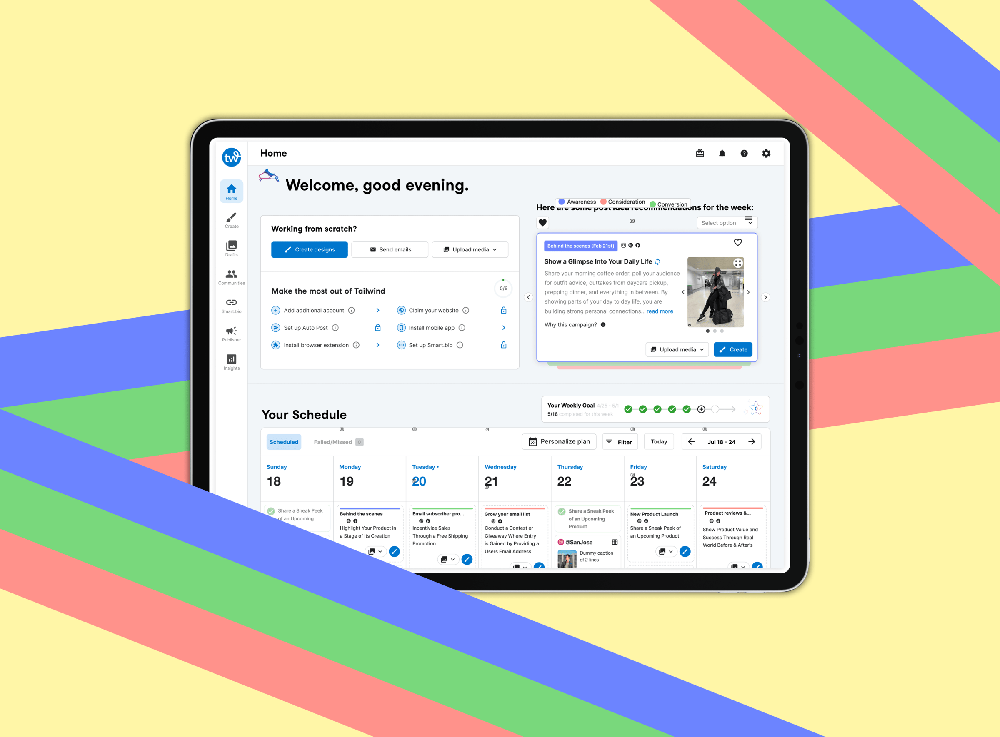
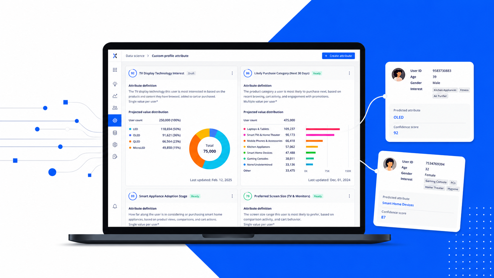
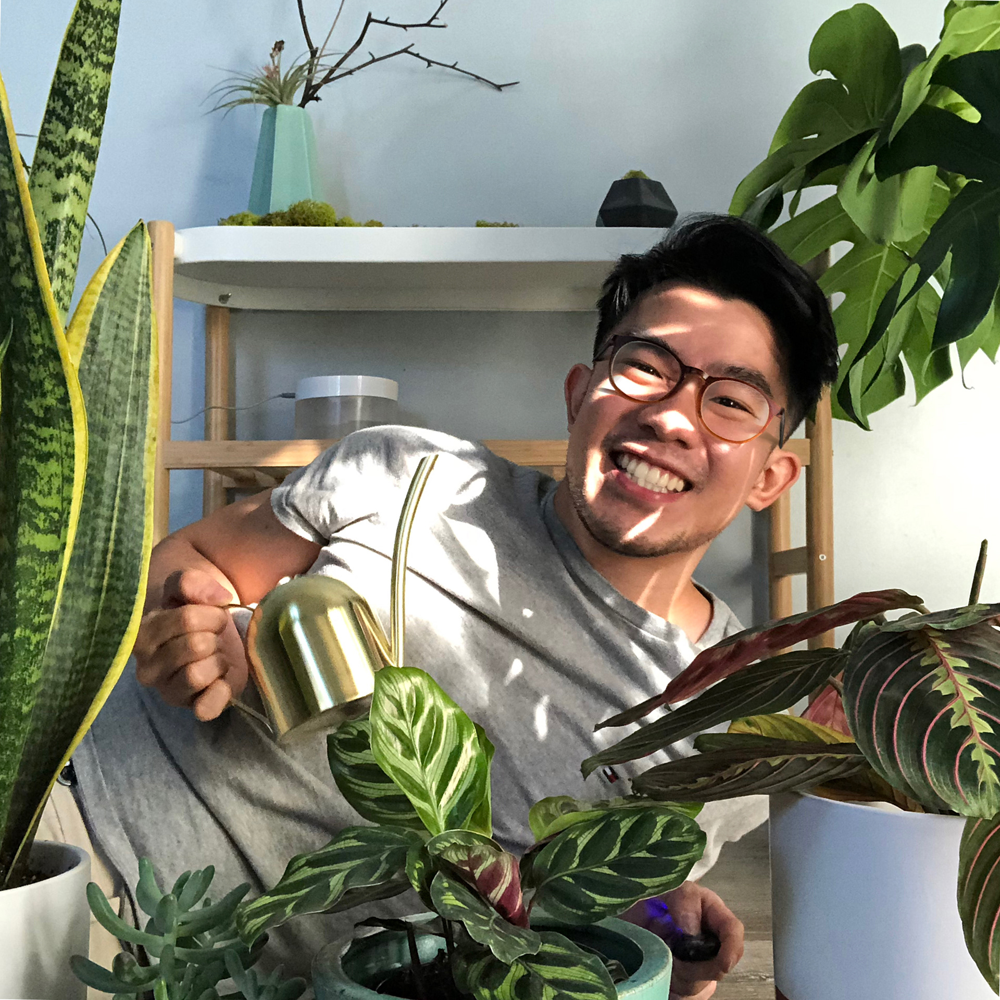

I turn messy AI and data problems into products people actually adopt.
From 0-to-1 launches to platforms used by millions, I connect research, strategy, and craft to make complex products easy to understand and easy to adopt.
Selected work
Tailwind Copilot
A marketing assistant for small business owners, built from scratch to launch in 8 months. Sole designer and product owner, working with developers, PMs, and the executive board.

AI Customer Profile Prediction
A stalled "look what we can do" AI prototype, rebuilt as a marketing-intelligence tool that marketers trust, with human-in-the-loop validation of LLM-generated user attributes. Product strategist and design lead.

Kidsync
A care-management platform for families of children with special healthcare needs, designed end to end in a 9-month Northwestern capstone. Led research, problem framing, and product design.

I work where the problem is ambiguous and the stakes are measurable.

I'm Tim, a product designer with 10+ years of experience working with international clients, startups, and established companies. Friends often joke that I should have become a therapist, and that's fair. Empathy is where my work starts. I'd rather sit with a user's problem until I really understand it than rush into a solution. The work I enjoy most is untangling complexity, turning pain points into clear design direction, and balancing user needs with technical constraints and business goals.
I find a lot of joy in creating those "aha" moments when something confusing finally feels clear. My strength is working in the messy middle between what users want, what the business needs, and what teams can realistically build, then turning that tension into thoughtful, useful design. I care about work that brings clarity, holds up in the details, and leads to outcomes people can actually feel.